This website compiles available evidence on how o1's reasoning capabilities compare to previous models. The evidence is organized by domain and includes both improvements and areas without significant progress. Each entry includes links to sources and detailed findings.
|
|
Evidence Type | Description | Source | Status | Details |
|---|---|---|---|---|---|
| Coding | Internal Evaluation | Evaluation of o1's reasoning capabilities with Devin using cognition-golden benchmark | Cognition Labs | Improvement | |
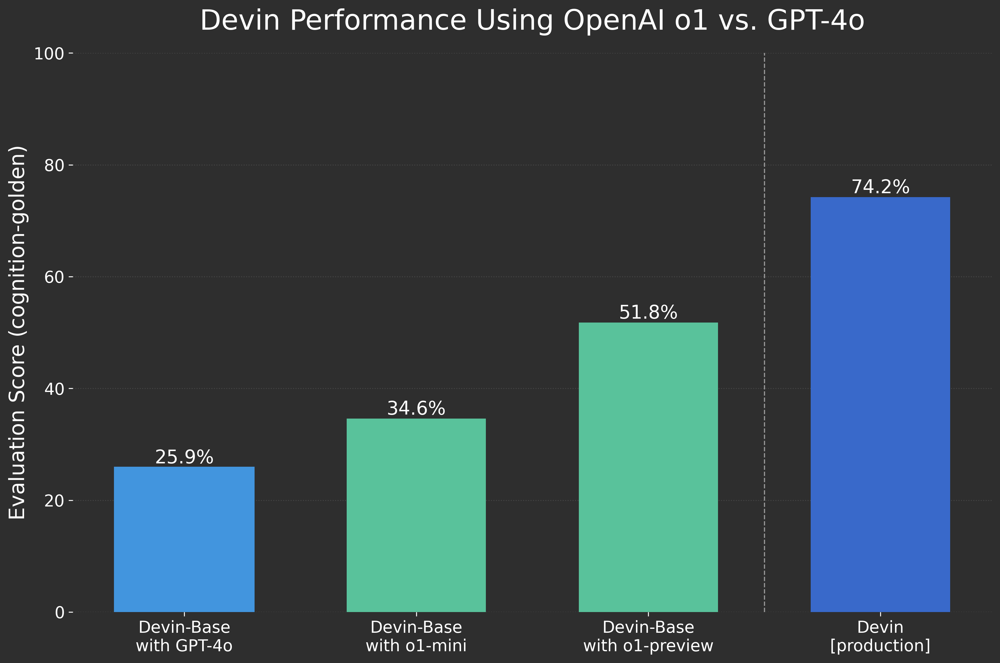
Cognition Labs evaluation of Devin |
|||||
| Coding | Official Evaluation | OpenAI's official evaluation of o1 on coding tasks | OpenAI | Improvement | |
|
Part of the official OpenAI o1 evaluations focused on coding and programming, where o1 achieved notable improvements. In the International Olympiad in Informatics (IOI), it ranked competitively under standard conditions and performed even better with relaxed constraints. In Codeforces evaluations, o1 surpassed prior models.
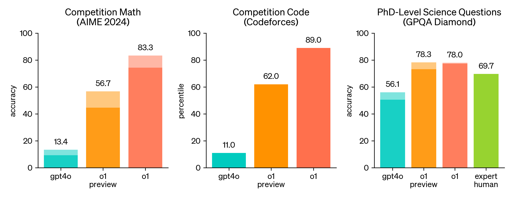
Codeforces Competition
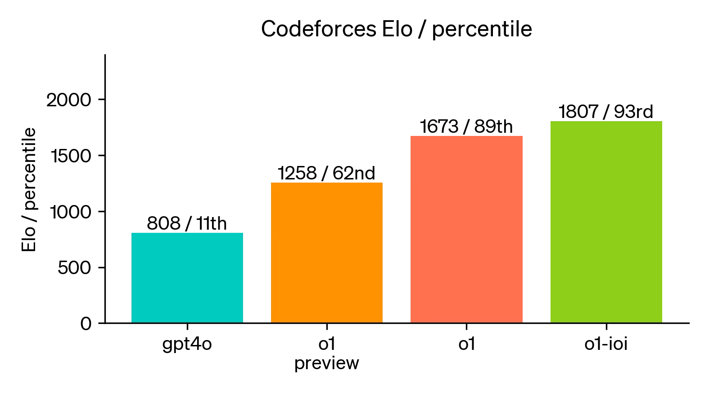
Codeforces Elo Comparison Graph |
|||||
| Coding | Benchmark | Performance on USACO programming competition tasks | USACO Results | Improvement | |
|
On USACO, o1 outperformed GPT-4 and increased the Pass@1 accuracy from 11.2% to 33.88%
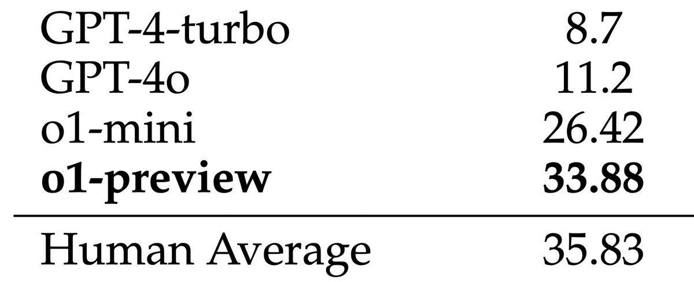
USACO Pass@1 Accuracy |
|||||
| Reliability | Official Evaluation | OpenAI's evaluation of model reliability | OpenAI | Improvement | |
|
Official evaluations showing improved worst of 4 performance on math, coding, and qa tasks
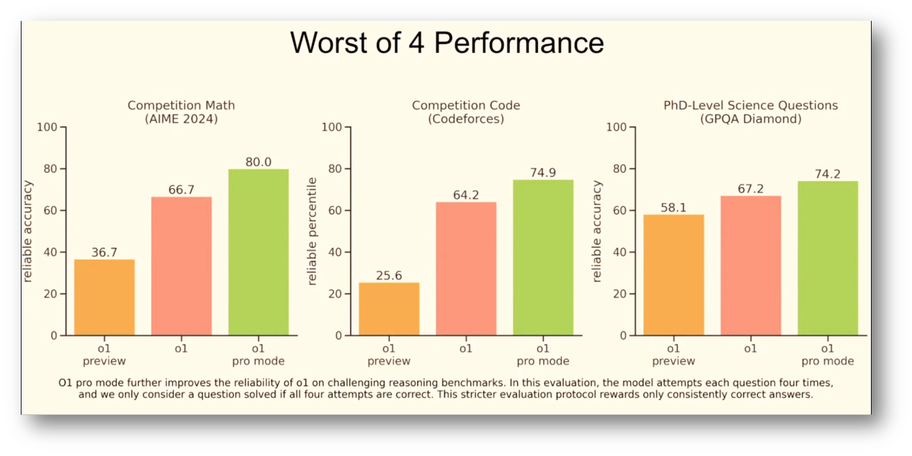
Worst of 4 performance of o1 series of models as reported by OpenAI |
|||||
| QA | Official Evaluation | OpenAI's evaluation of question answering capabilities | OpenAI | Improvement | |
|
o1 improves over GPT-4o on a wide range of benchmarks, including 54/57 MMLU subcategories.
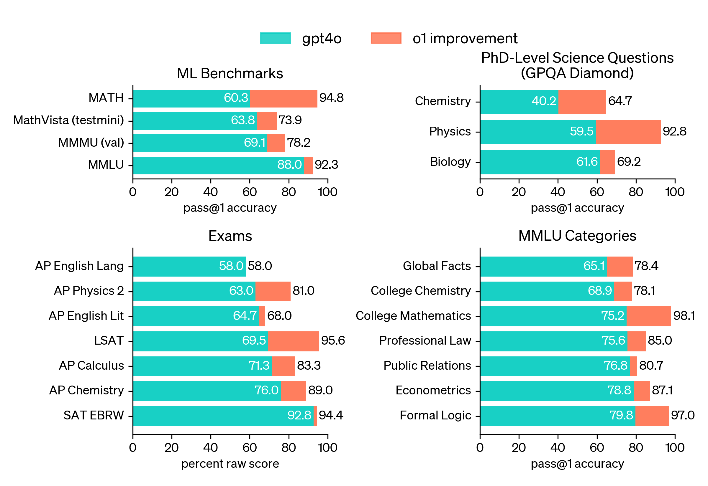
OpenAI evaluation results on QA benchmarks |
|||||
| Mathematics | Official Evaluation | OpenAI's evaluation of mathematical reasoning capabilities | OpenAI | Improvement | |
|
Official evaluations showing significant improvements in mathematical reasoning.
OpenAI Math |
|||||
| Cybersecurity | Research Paper | Evaluation by Turing Institute on cybersecurity capabilities | Turing Institute | Improvement | |
|
The key evaluation findings for the OpenAI o1 model in this paper highlight good performance in automated software exploitation tasks. Using DARPA’s AI Cyber Challenge (AIxCC) framework, o1-preview achieved the highest success rate among tested models, solving 64.71% of the challenge project vulnerabilities (CPVs). This performance significantly surpassed other models. The o1-mini variant, though more cost-efficient, showed reduced efficacy.

Turing Cybersecurity |
|||||
| Cybersecurity | Benchmark | Offical results from the CyBench cybersecurity benchmark leaderboard | CyBench | No Improvement | |
|
No significant improvements shown in the CyBench benchmark. Cybench includes 40 professional-level Capture the Flag (CTF) tasks from 4 distinct CTF competitions, chosen to be recent, meaningful, and spanning a wide range of difficulties. This task requires o1 being used as part of an agent scaffold.

Cyberbench |
|||||
| Planning | Research Paper | Analysis of planning and reasoning capabilities on various benchmarks | Rao et al. | Improvement | |
|
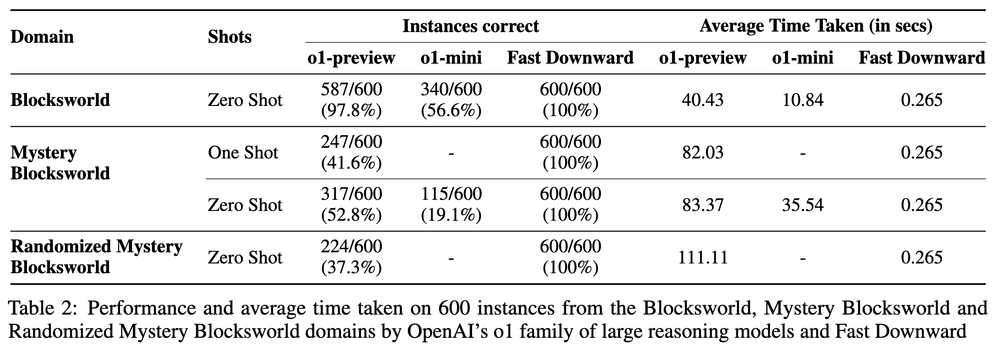
o1 performance on Blocksworld and other planning benchmarks
Overall, while o1 shows substantial improvements over previous LLMs in structured reasoning, it faces challenges in scalability, efficiency, and reliability, especially on complex or obfuscated tasks. Detection of unsolvable tasks |
|||||
| Planning | Benchmark | Results from the MR-Ben meta-reasoning benchmark | Zeng et al. | Improvement | |
|
Improved performance in meta-reasoning and system-2 thinking tasks. The paper introduces MR-Ben, a meta-reasoning benchmark designed to evaluate the reasoning capabilities of large language models (LLMs) across diverse domains, including natural sciences, coding, and logic. Unlike traditional benchmarks that focus solely on accuracy, MR-Ben assesses the reasoning process itself by requiring models to identify and analyze errors in reasoning chains.
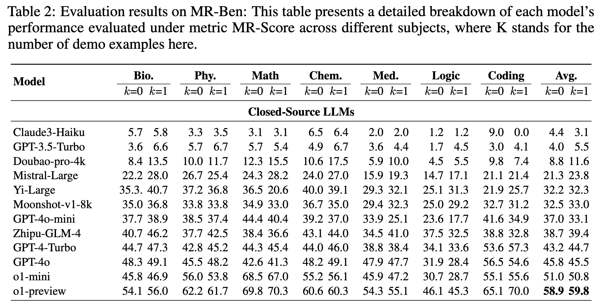
Performance of o1 on MR-Ben |
|||||
| Legal | Research Evaluation | Results from Japanese certification examination for 'Operations Chief of Radiography With X-rays | Goto et al. | Improvement | |
|
Improved capabilities in medical image processing and analysis. The overall accuracy rates of GPT-4o and o1-preview ranged from 57.5% to 70.0% and from 71.1% to 86.5%,
respectively. The GPT-4o achieved passing accuracy rates in the subjects except for relevant laws and
regulations. In contrast, o1-preview met the passing criteria across all four sets, despite graphical questions
being excluded from scoring. The accuracy of all questions and relevant laws and regulations in o1-preview
were significantly higher than those in GPT-4o (p = 0.03 for all questions and p = 0.03 for relevant laws and
regulations, respectively). No significant differences in accuracy were found across the other subjects.
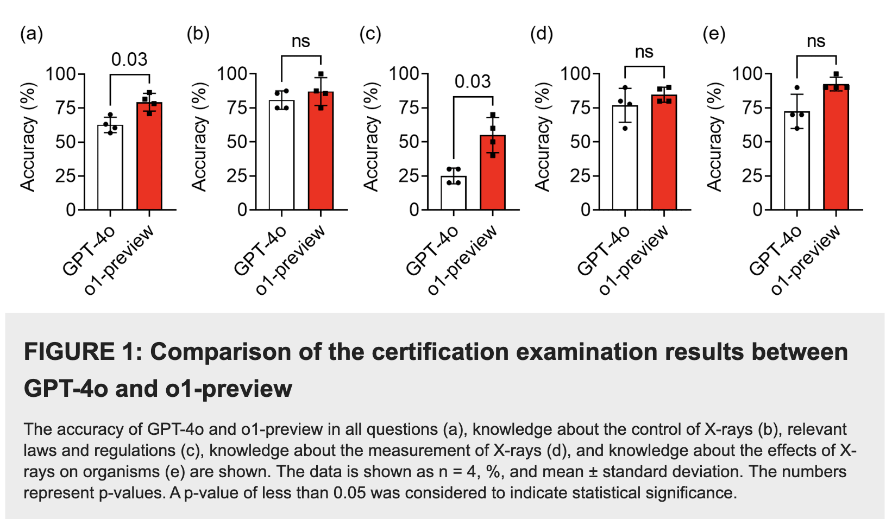
|
|||||
| Reproducibility | Benchmark | Computational reproducibility evaluation on CORE-Bench | CORE-Bench | No Improvement | |
|
No significant improvements in computational reproducibility benchmark on CORE-Bench. Claude 3.5 Sonnet clearly outperforms o1-mini getting 37.8% accuracy while o1-mini only gets 24.4% accuracy.
|
|||||
| General AI Assistant |
Benchmark | GAIA benchmark evaluation | Our internal evals | No Improvement | |
|
No significant improvements shown on GAIA benchmark with standard agent scaffolding. GAIA is a benchmark for General AI Assistants. GAIA proposes real-world questions that require a set of fundamental abilities such as reasoning, multi-modality handling, web browsing, and generally tool-use proficiency. o1-mini get 37% accuracy while Claude 3.5 Sonnet gets 58% accuracy and GPT-4o gets 35% accuracy.
|
|||||
| Writing | Official Evaluation | OpenAI's evaluation of personal writing and text editing capabilities | OpenAI | No Improvement | |
|
No significant improvements in personal writing and text editing tasks. They evaluated human preference of o1-preview vs GPT-4o on challenging, open-ended prompts in a number of domains. In this evaluation, human trainers were shown anonymized responses to a prompt from o1-preview and GPT-4o, and voted for which response they preferred. o1-preview is not preferred on some natural language tasks like writing and text editing.

Personal writing and text editing tasks |
|||||
| Human Tasks | Research Paper | Tasks where human intuition typically performs better | Liu et al. | No Improvement | |
|
This paper investigates the impact of chain-of-thought (CoT) prompting on the performance of large language models (LLMs) across six task categories inspired by cognitive psychology. Key findings include:
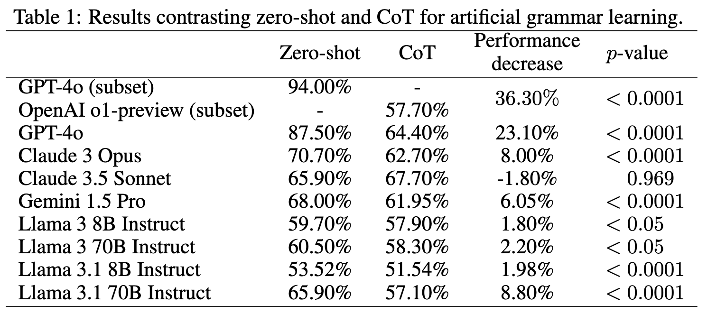
Performance of o1-preview on grammar learning task |
|||||
| Scaling | Analysis | Analysis of performance scaling and compute requirements | Scaling Laws | Analysis | |
|
They evaluate on the 30 questions that make up the 2024 American Invitation Mathematics Examination (AIME). Using OpenAI's o1-mini, accuracy improves as test-time token budgets increase up to ~2^17 tokens. However, performance plateaus at ~70% accuracy beyond this point, even with self-consistency techniques like majority voting. This aligns with prior findings that such methods saturate after initial gains, emphasizing diminishing returns for extended inference budgets.
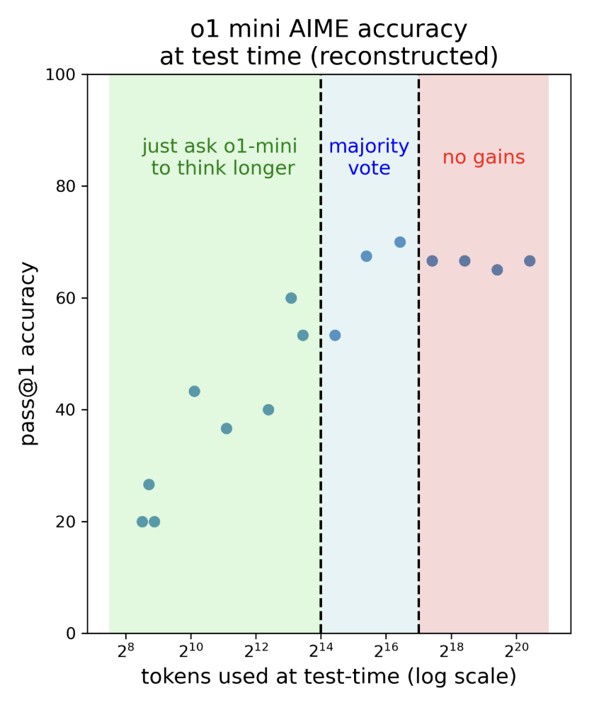
Performance of o1-mini on AIME reproduced from the offical evaluations and with larger token budgets. The curve flattens past 70% accuracy. |
|||||
| Scaling | Analysis | EpochAI evaluation of o1-preview vs GPT-4o | EpochAI | Analysis | |
|
They plotted GPQA accuracy against the number of output tokens generated for both methods, and compared it to o1-preview's GPQA accuracy. While both methods improved GPT-4o's accuracy, they still significantly underperformed o1-preview at inference compute parity.
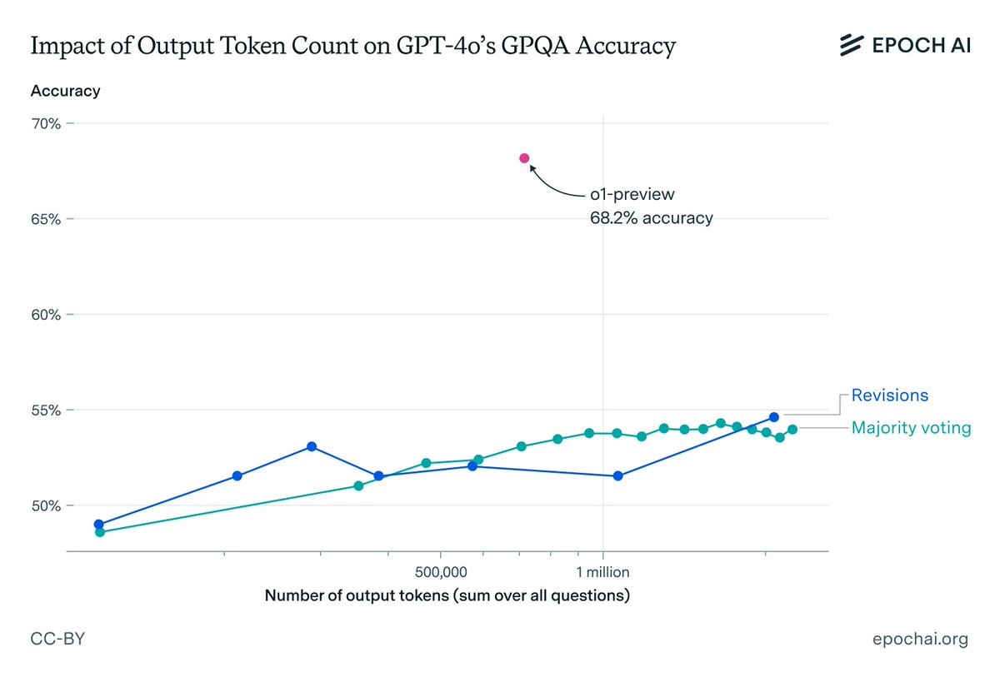
Naively scaling inference compute isn't enough. o1-preview's superior performance likely stems from advanced RL techniques and better search methods. |
|||||